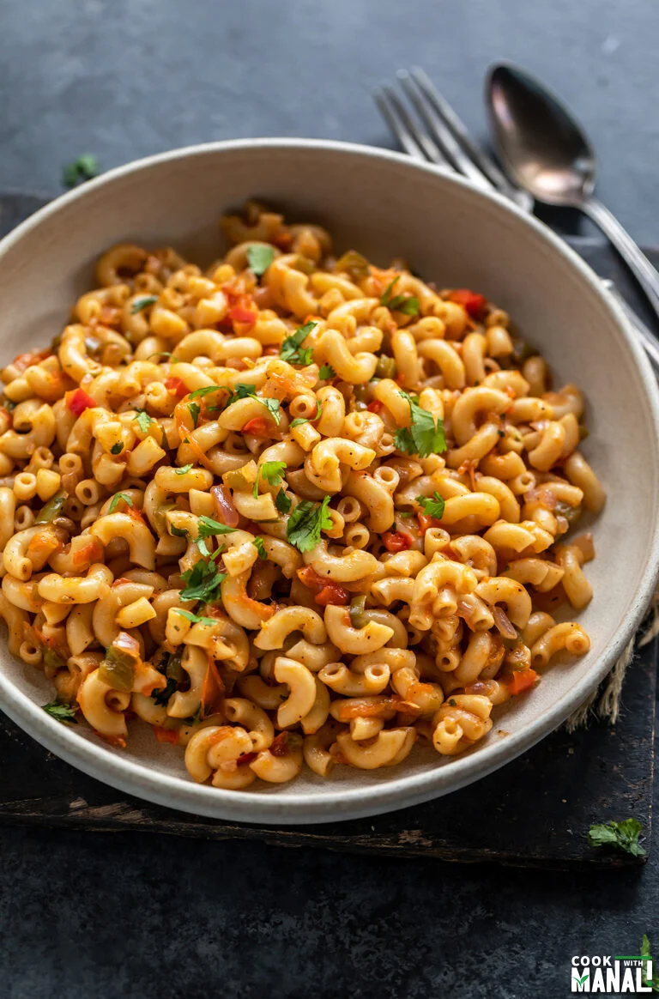

Masala macaroni recipe

Ingredients needed
- Elbow macaroni pasta:I have used the regular elbow macaroni, these can definitely come in different sizes, I am using the really small ones.
- Veggies:I have used onions, tomatoes, peppers you can also use peas, carrots etc . Usage of meat may be upto you, be sure to process it(not really recommended here though)
- Spices:I have only used garam masala and red chili powder along with Italian seasonings like oregano but you can also use turmeric and coriander powder, don't be afraid to try and spice it up according to your tastes, schezwan sauce along with red chili flakes and oregano also tastes pretty nice
- Tomato ketchup:Adds a lot of tangy and sweet flavor, make sure to add it, a fresh sauce would be the best but packaged ones will do just fine
Step by Step Instructions
- prepping the pasta:Put the pasta in some pot, fill it with water and then add your macaroni along with some oil and salt then cook it until macaroni's increase in size and are cooked
- Bringing the heat:Take a wok, frying pan, kadhai and put some oil in it, once the oil is hot add in your veggies along with the spices and keep sauteing them until they look cooked
- Adding in the flavors:Put in some salt(Make sure to put salt accordingly as macaroni's will also have some salt) then add your tomato sauce/ketchup along with other sauces like schezwaan sauce and red-chili flakes
- Adding the pastaOnce your macaroni's are boiled and ready go ahead, take them out and run them for a bit in cool water then put them in the pan you are cooking (Make sure there is not too much excessive water content after washing them under cool water)
- Touching Up:Mix everything well patiently to avoid breaking the macaroni check for flavors and adjust accordingly